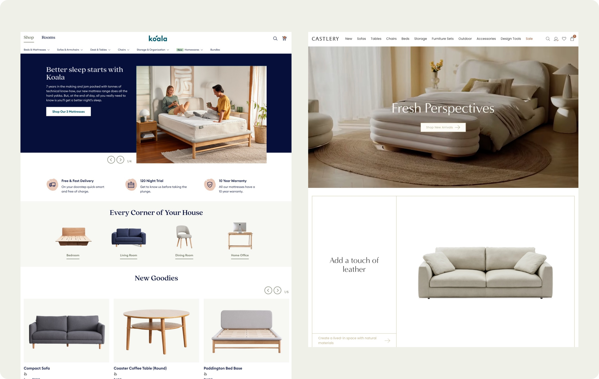
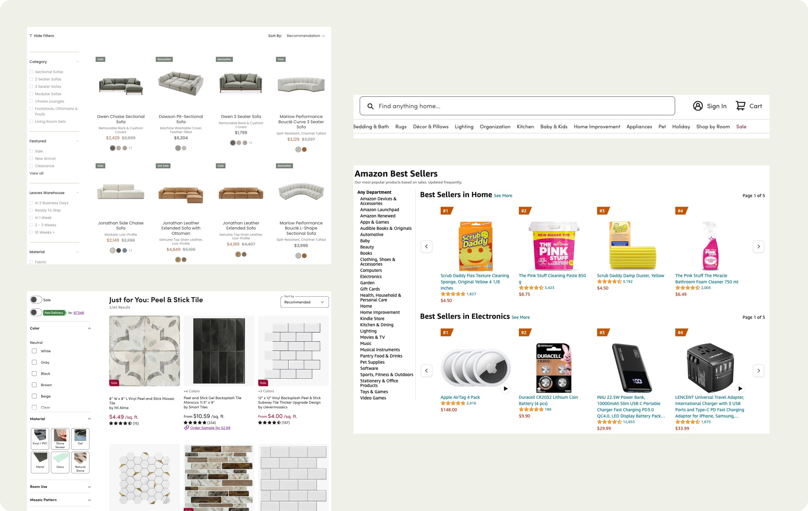
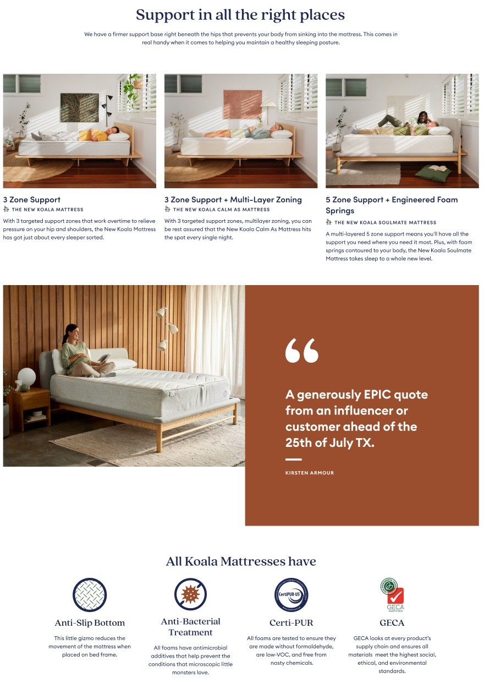
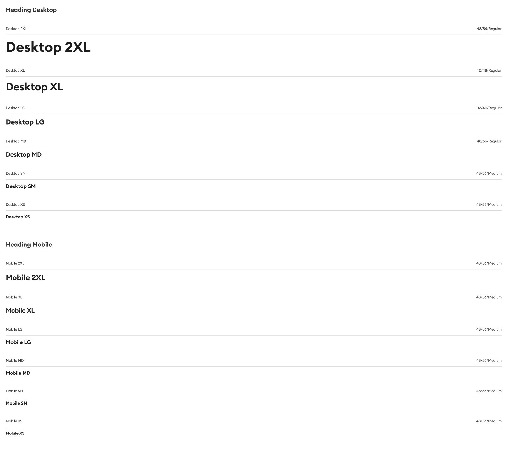
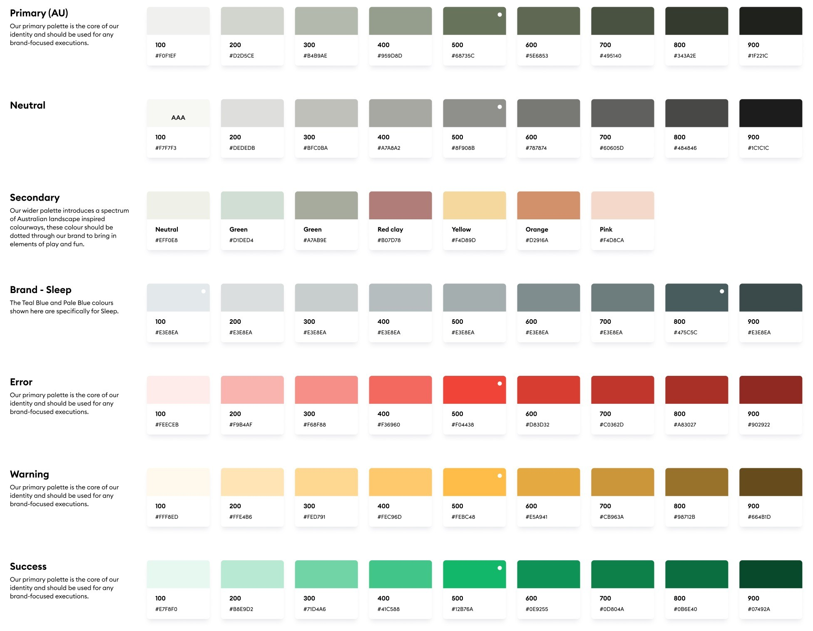
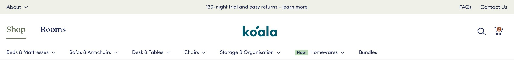

Elevating a brand’s design maturity
The original project documents a fragmented digital experience and a need for more consistent, scalable design practices. Across a fast-moving ecommerce environment, the team needed to make changes without repeatedly recreating patterns or introducing avoidable inconsistency.
The objective was not simply to refresh the visual language. It was to establish foundations that could support clearer customer experiences and more efficient delivery.
Identifying design problems
The original case study examines inconsistency in the storefront and catalogue, including differences in presentation, content patterns and navigation. These comparisons made the cost of fragmented decisions visible and helped define where standardisation would matter.



Going back to basics
The work moved from individual screens toward reusable foundations: typography, colour, navigation and common UI treatments. The original project includes a responsive type scale and a broad set of semantic and brand colour values.
These decisions create a shared vocabulary for design and engineering, reducing the need to negotiate visual rules afresh for every page or campaign.


From standards to scalable delivery
Reusable patterns only matter when they make it into the shipped product. The CV describes work improving component consistency, introducing WCAG 2.0/2.1 accessibility guidelines, creating CMS page templates and collaborating with engineering to reduce manual hard-coding.
The case study also documents application of the visual system across the ecommerce experience, rather than treating the design system as an isolated library.

Systems that support growth
Two types of impact are described in the historical CV: delivery efficiency from improving the legacy system, and commercial movement associated with broader storefront and pre-purchase redesign work. These should not be presented as one controlled experiment.
What to verify next
Confirm which parts of the design system and CMS workflow shipped during each phase, the measurement windows behind delivery-efficiency results, and the relationship between the design-system work and the wider ecommerce redesign.
Exact original body copy remains to be transcribed from Framer. This version preserves the sequence and visual evidence from the supplied full-page screenshot and exported assets, with narrative paraphrased rather than presented as verbatim.
Sources: Original Framer asset export and full-page case-study screenshot; pre-Mable CV. Original Framer case study ↗